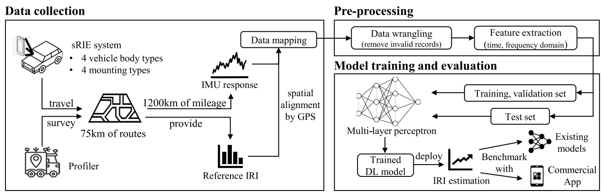

This project developed crowdsourcing-based technologies for scalable pavement condition assessment using smartphones. Traditional pavement monitoring often relies on specialised survey vehicles and instruments, which can be costly, labour-intensive, and limited in network coverage and inspection frequency. This project explored how smartphones mounted in ordinary vehicles can collect motion, positioning, and contextual data to estimate pavement roughness and detect surface deterioration. The research developed and evaluated smartphone-based sensing pipelines, road roughness estimation methods, and assessment frameworks that account for practical factors such as vehicle type, travel speed, phone placement, and mounting configuration. By combining mobile sensing, signal processing, and data-driven modelling, the project supports more frequent, low-cost, and spatially extensive monitoring of road assets. Its outcomes contribute to smarter pavement management systems that enable earlier intervention, improved ride quality, reduced maintenance costs, and safer transport infrastructure.
